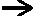

|
Э |
Экономический цикл - развитие экономики между двумя одноименными фазами экономического цикла. Эффект вытеснения - снижение экономической активности частного сектора из-за роста ставки процента, обусловленного увеличением государственных расходов. Эффект Кейнса - последовательность событий при изменении уровня цен: рост (снижение) уровня цен  снижение (увеличение) реальных кассовых остатков повышение (снижение) ставки процента сокращение (увеличение) спроса на инвестиции снижение (рост) национального дохода.Эффект Пигу - последовательность событий при изменении уровня цен: рост (снижение) уровня цен сокращение (увеличение) реальных кассовых остатков увеличение (уменьшение) предельной склонности к сбережению снижение (рост) потребления домашних хозяйств. Эффект Фишера - последовательность событий при изменении уровня цен: снижение (рост) уровня цен, сокращение (увеличение) совокупного спроса по двум причинам:
Эффективное значение параметра - значение экономического параметра, к достижению которого стремится хозяйствующий субъект при количественном ограничении на рынках, порожденном негибкостью цен в коротком периоде.
|